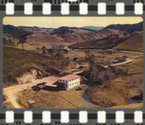
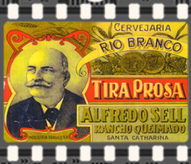
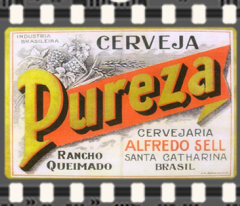
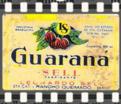
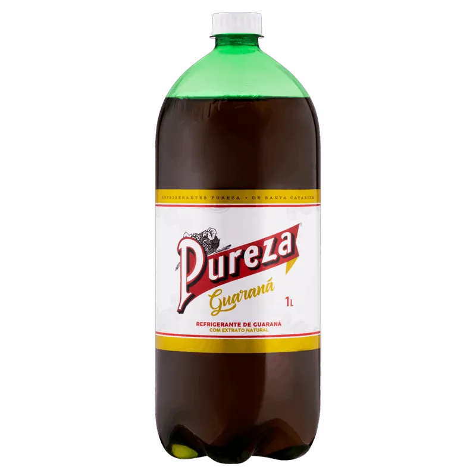
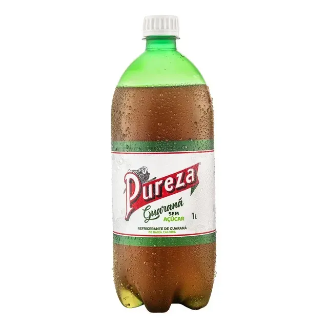
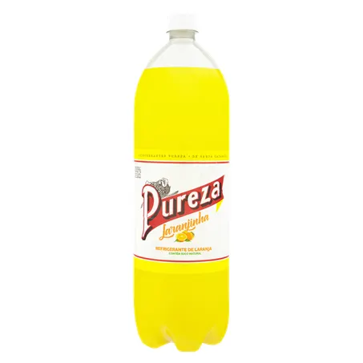
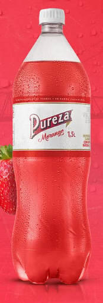
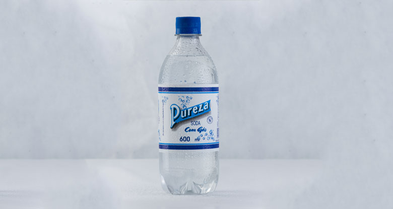

Em 1908 a fábrica foi instalada em Rancho Queimado, às margens do Rio Capivara.
Em 1905, Alfredo Roberto Sell instala a Cervejaria Alfredo Sell às margens do Rio Capivaras, em Rancho Queimado/SC. Três anos depois muda o nome para Cervejaria Rio Branco e transfere a fábrica de local, onde permanece até hoje. A primeira bebida que a fábrica produziu foi a cerveja “Tira Prosa”.

Rótulo da primeira cerveja produzida
A partir de 1917, com o uso das sobras da matéria-prima da cerveja Tira Prosa, começou a ser produzido um refresco não alcoólico popularmente conhecido como "cerveja-doce", que ganhou aceitação imediata, especialmente entre mulheres, que preferiam uma bebida mais suave e sem álcool.

Cerveja Pureza
Em 1926, diante da necessidade de um rótulo oficial, o produto foi batizado de Pureza, em homenagem à qualidade pura dos ingredientes — água de boa procedência e polpa natural de guaraná. O nome e o logotipo original permanecem até hoje. Em 1927, a comercialização da bebida começou a expandir-se entre Bom Retiro e Florianópolis. A fábrica se transferiu para o local atual em 1908, às margens do Rio Capivaras, onde permanece até hoje.

Guaraná Pureza
Em 1959, foi feita a última produção de cerveja, e a empresa passou a focar exclusivamente em refrigerantes. Com o tempo, foram lançados sabores como limão, laranjinha, abacaxi, morango (em homenagem à cidade de Rancho Queimado, capital catarinense do morango) e, por um período, cola, que foi descontinuado por custos na importação da matéria-prima.
Atualmente, a empresa é administrada pela quinta geração da família Sell, com Ricardo Sell, bisneto do fundador, como um dos sócios. A marca é símbolo de resistência da indústria local, com produção de mais de 1,5 milhão de litros por mês, sendo 95% das vendas compostas pelo Guaraná Pureza, que completa 108 anos em 2025. A fórmula é mantida em segredo, e a empresa investe em sustentabilidade com a volta gradual para embalagens retornáveis de vidro.
O Refrigerante Pureza possui vários sabores diferentes.
Pureza Original:
Pureza Light:
Pureza Laranjinha:
Pureza Morango:
Pureza Água com gás:
A Pureza é uma das marcas mais tradicionais de Santa Catarina. Veja algumas curiosidades: